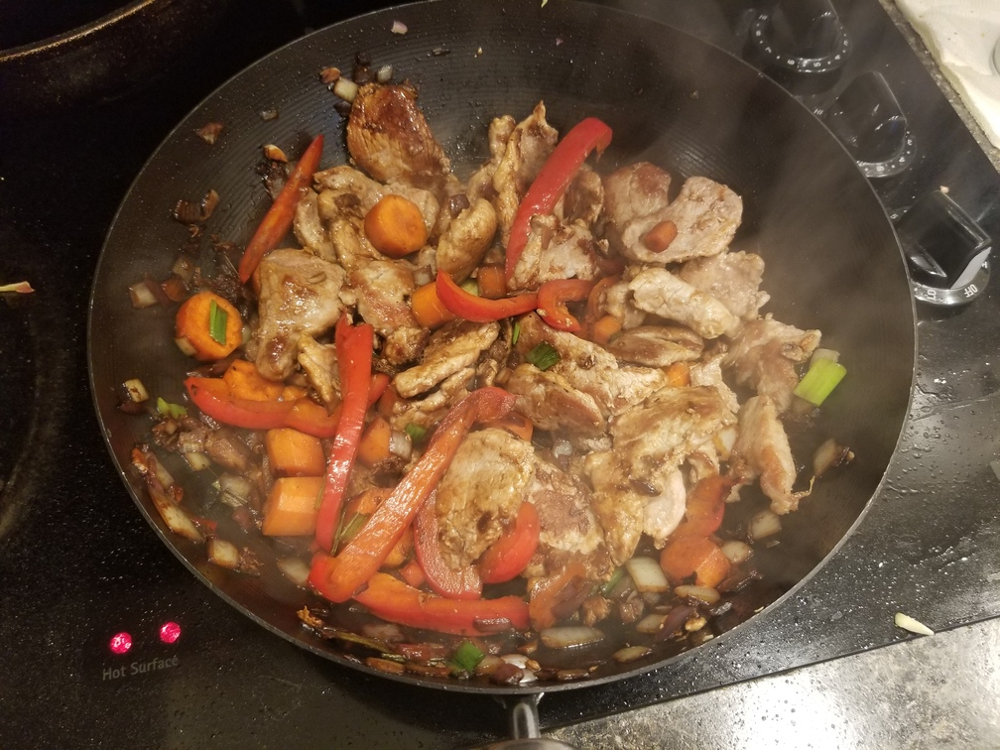
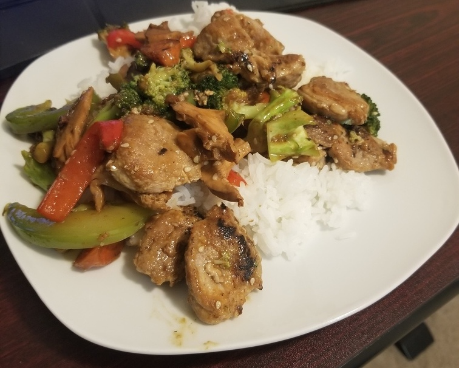
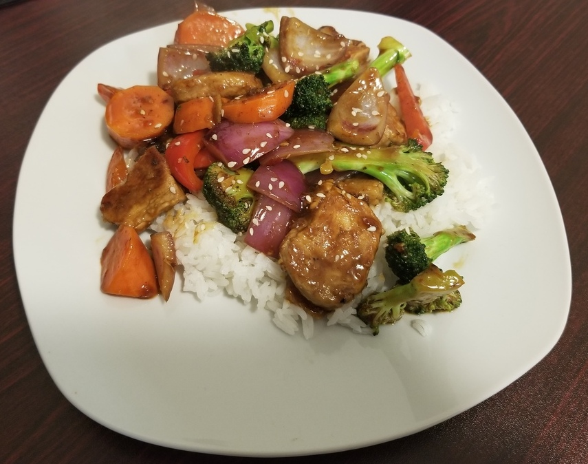

Chicken Stir Fry
Homepage
A classic and flavourful chicken stir fry with limitless options for veggies.
Ingredients:
*Note: Ingredient quantities are approximate, I suggest trying to match
the amounts the first time you try the recipe then adjust to your liking thereafter
- 1lb Chicken Thighs, bones/skins removed, cut into bite sized pieces
- Salt
- Pepper
- 3-6 Cloves Garlic, minced
- 1 Thumb Ginger, minced
- Cooking Fat (e.g. Olive Oil, Ghee, Beef Talow)
- Sesame seeds (optional)
Some Vegetable Options:
- Carrots, sliced
- Brocolli or brocollini, stalks removed, chopped
- Bell peppers, sliced
- Mushrooms, chopped
- Peas
- Baby corn
- Onion, chopped
- Eggplant
For the sauce:
- 1/4 Cup Soy Sauce
- 1 Tablespoon Oyster Sauce
- 1 Teaspoon Red Chilli Flakes
- 1 Tablespoon Cornstarch
- 1 Teaspoon Sesame Oil
- 1 Teaspoon Rice Vinegar
Instructions
- Combine the sauce ingredients together in a bowl and stir until even consistency.
- Coat your chicken pieces with salt and pepper.
- In a large pan or wok brown your chicken pieces in batches over medium-high heat, ensure you don't
crowd the pan or the chicken will steam instead of browning.
- Once all the chicken is browned remove from heat and set aside, the chicken does not need to be
100% cooked through.
- Turn the heat up to high and add in the vegetables starting with the harder vegetables such as carrots,
and onions. Then move onto the other softer vegetables. Cook until crisp, stirring occasionally.
- Turn the heat back down to medium and add the garlic and ginger, cook until fragrant
(about 30 seconds)
- Add the sauce to the pan and reduce to desired consistency.
- Serve with sesame seeds over rice!



Homepage